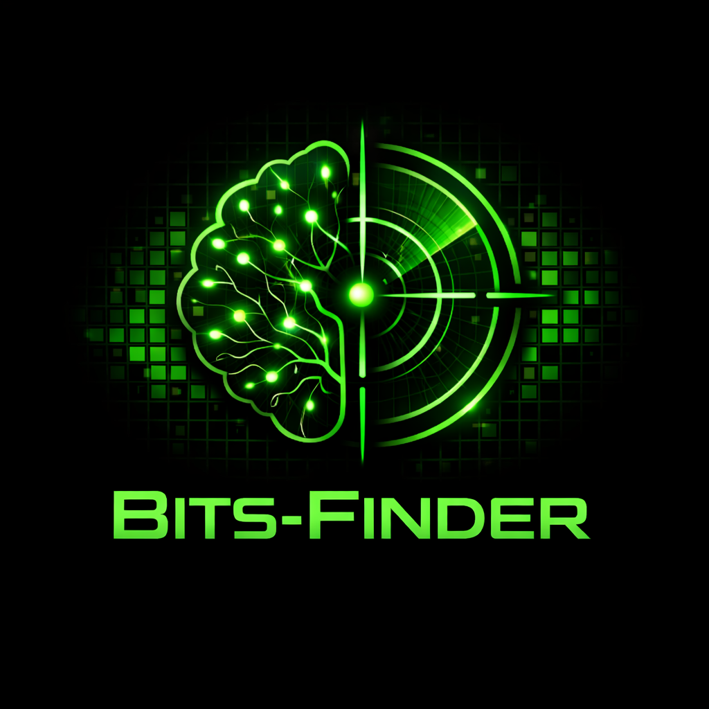
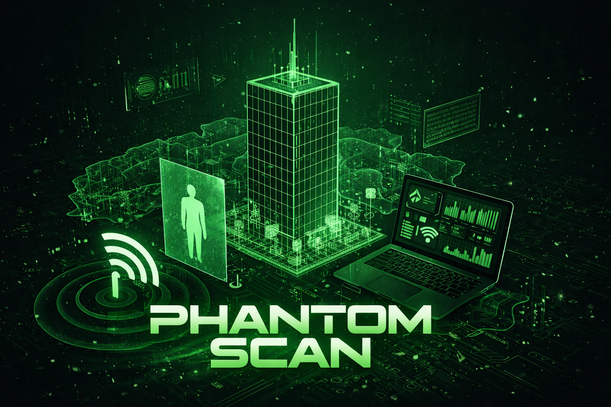

Featured Projects
Detailed insights into my cybersecurity and AI initiatives

Bits-Finder
Bits-Finder is a professional-grade, cross-platform Digital Forensics and Incident Response (DFIR) platform that leverages the Intel PIN Dynamic Binary Instrumentation (DBI) framework. It is designed to deterministically capture high-fidelity execution traces and full process memory dumps at the exact moment of an application compromise or crash.
The platform automatically orchestrates industry-standard forensic tools like Volatility 3 and Eric Zimmerman's Tools to parse artifacts, feeding data into an AI-powered Python analysis engine. Finally, the AI reconstructs the attack kill chain, detects evasive exploits like Return-Oriented Programming (ROP), and generates a comprehensive post-mortem report mapped to MITRE ATT&CK and MITRE D3FEND frameworks.

Phantom Scan
Phantom Scan is an advanced, camera free Wi-Fi sensing dashboard that visualizes human motion and indoor environments in real time 3D. By capturing and analyzing Wi-Fi Channel State Information (CSI) using low cost edge devices like the ESP32-S3 microcontroller, the system translates invisible radio wave distortions into actionable spatial data without compromising user privacy. Because it relies purely on how existing Wi-Fi signals bounce off the human body, Phantom Scan is completely "device free" meaning the subject being tracked does not need to carry a smartphone or wear any sensors. Powered by a Python backend and deep learning models, the system isolates dynamic movements from static background noise to track subjects even through walls or in the dark. It utilizes architectures like LSTM Embedded DenseNet for fine grained Human Activity Recognition (classifying actions such as walking, sitting, breathing, or falling) and Transformer networks to map 1D CSI data into detailed 3D point clouds. On the frontend, the system features a React based interactive 3D viewer that renders moving subjects as tracked signal points or dynamic 3D human meshes (SMPL models). This provides a complete, privacy preserving solution for smart home automation, elderly care monitoring, and indoor physical security.
Nashama Bootcamp 8 Final Project
During my internship at NCSCJO, I conducted a comprehensive penetration test on a FOG Server. This project involved vulnerability assessments and complex attack simulations mapped to the MITRE ATT&CK framework. I documented technical findings and prepared clear, actionable reports for remediation, supporting the SOC team in monitoring and responding to potential threats.
Facial Recognition Authentication
Developed a fully functional facial authentication web application. This project enables users to register and log in using real-time face recognition technology, bridging the gap between AI and secure web authentication. The application focuses on both usability and the security aspects of biometric data processing.